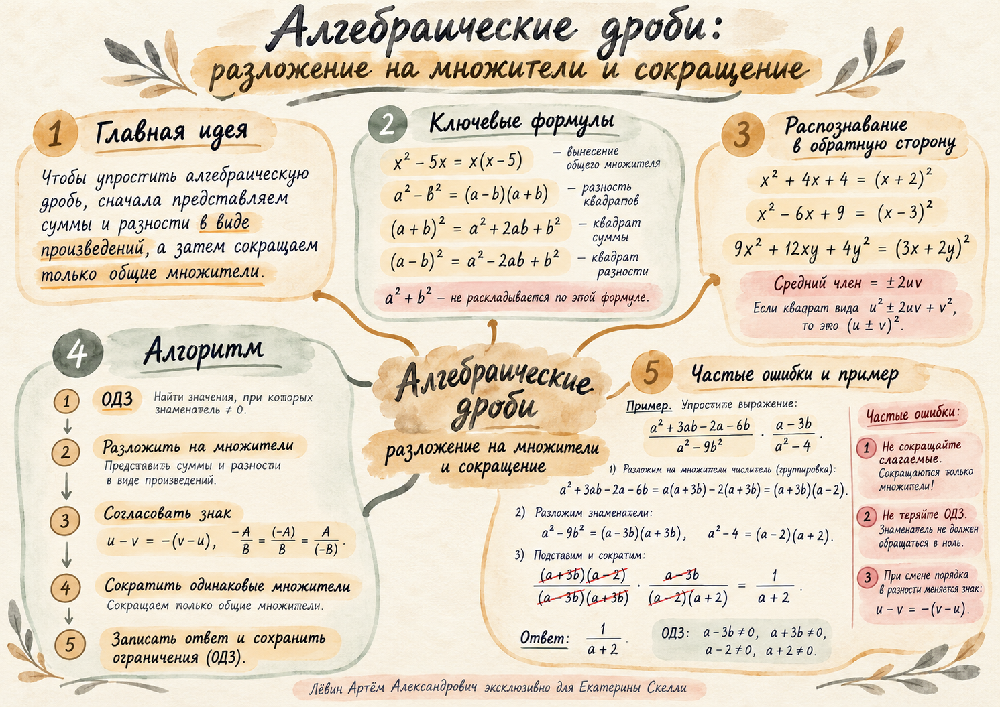

Минус тоже можно вынести: −3−5x=−(3+5x).
Алгебра · 8 класс · 27 сентября 2026
Сначала множители
Чтобы сократить алгебраическую дробь, сначала превратите суммы и разности в произведения. Сокращать можно только общие множители, а ограничения исходного знаменателя сохраняются.
Главный приём урока — увидеть произведение там, где сначала записана сумма или разность.
01 · Инструменты
Превратить выражение в произведение
Перед сокращением ищите общий множитель, разность квадратов, полный квадрат или группировку.
Например, 4x²−9y²=(2x−3y)(2x+3y).
Сумма квадратов u²+v² по этой формуле не раскладывается.
Одинаковая скобка становится общим множителем.
Этот приём помогает получить одинаковые множители перед сокращением.
02 · Распознавание
Формулы работают в обе стороны
Если крайние слагаемые — квадраты, проверьте средний член: он должен быть равен ±2uv.
Проверка: средний член = ±2 · первый корень · второй корень.
03 · Сокращение
Сокращаются множители целиком
ОДЗ записывается по исходному выражению. Исчезнувший после сокращения множитель всё равно оставляет своё ограничение.
Базовый пример
(x−3)(x+1) / x(x−3) → (x+1)/x
ОДЗ: x≠0, x≠3. Ограничение x≠3 сохраняется после сокращения.
01
Запишите ОДЗ исходных знаменателей.
02
Разложите числитель и знаменатель на множители.
03
При необходимости согласуйте знак: u−v=−(v−u).
04
Сократите только одинаковые множители.
05
Запишите ответ и сохраните исходные ограничения.
01 · ОДЗЗнаменатель не равен нулю.
02 · ФакторыСуммы и разности → произведения.
03 · ЗнакПротивоположные разности отличаются минусом.
04 · СокращениеТолько общие множители.
05 · КонтрольОДЗ не теряется.
04 · Полный пример
Группировка → факторизация → сокращение
Разберите пример по шагам. Текущий шаг сохраняется в браузере, если localStorage доступен.
Задача занятия
ОДЗ исходного выражения
Ограничения берём до сокращения.
Сгруппировать числитель
Одинаковая скобка a+3b становится общим множителем.
Разложить знаменатели
В обоих случаях применяется разность квадратов.
Сократить общие множители
(a+3b)(a−2) / (a−3b)(a+3b) · (a−3b) / (a−2)(a+2)
После сокращения остаётся только множитель a+2 в знаменателе.
Ответ и контроль ОДЗ
Ответ: 1/(a+2), при a≠3b, a≠−3b, a≠2, a≠−2.
Ловушки
Три ошибки, которые ломают решение
Каждая из них возникает в момент преобразования, а проявиться может только в самом конце.
Сокращение слагаемых
Сначала превратите выражение в произведение. Сокращаются множители целиком.
Потеря ОДЗ
Множитель может исчезнуть после сокращения, но его запрет из исходного знаменателя остаётся.
Знак разности
При смене порядка слагаемых появляется минус: u−v=−(v−u).
Наглядная памятка
Вся логика занятия на одном листе
На плакате собраны формулы, алгоритм сокращения, пример с группировкой и основные ошибки.

05 · Путь А
10 задач на закрепление
Разложение на множители записывайте явно. В задачах с дробями указывайте ограничения исходного выражения.
1. Разложите на множители: .
2. Разложите на множители: .
3. Представьте в виде квадрата двучлена: .
4. Упростите: .
5. Упростите: .
6. Упростите: .
7. Упростите: .
8. Упростите, согласовав знаки при необходимости: .
9. Упростите: .
10. Упростите: .
1x(x−6)Ограничений нет.
2(4a−5b)(4a+5b)Ограничений нет.
3(3x+4y)²Ограничений нет.
4−1/(x+2y)x+2y≠0.
5(x−4)/(x+4)x≠−4.
65/2p+q≠0, p−q≠0.
74(x−3)/xx+2y≠0, x≠0, x≠−3.
8−2/(3x+4y)3x−4y≠0, 3x+4y≠0.
91/(a+3)a≠4b, a≠−4b, a≠3, a≠−3.
106(m−1)/mm+2n≠0, m≠0, m≠−1.
Финальная проверка
Узнаю правило → применяю → контролирую ОДЗ
Мини-квиз использует только идеи текущего занятия. После него отметьте навыки, которые можете восстановить без подсказки.
1. Что можно сокращать в алгебраической дроби?
2. Что происходит с ограничением, если соответствующий множитель сократился?
3. Какая формула подходит к u²−v²?
Отмечено 0 из 7.